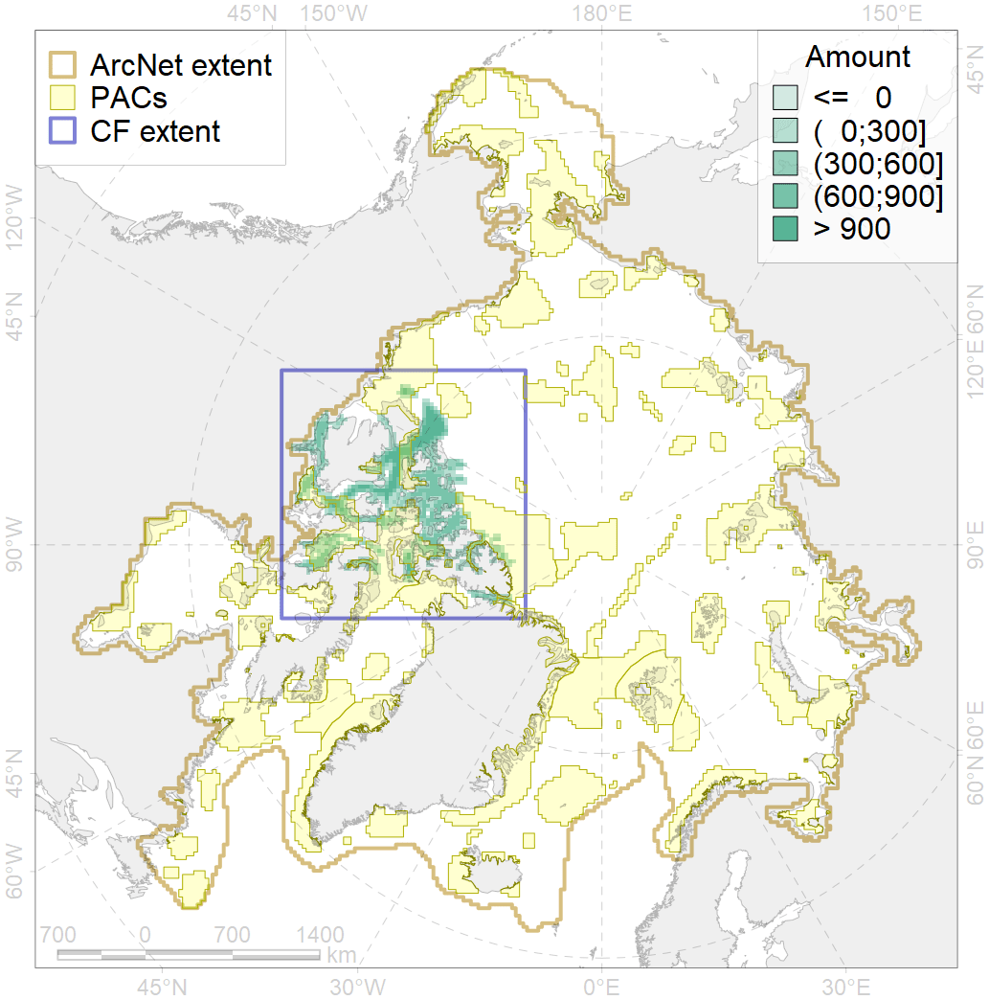
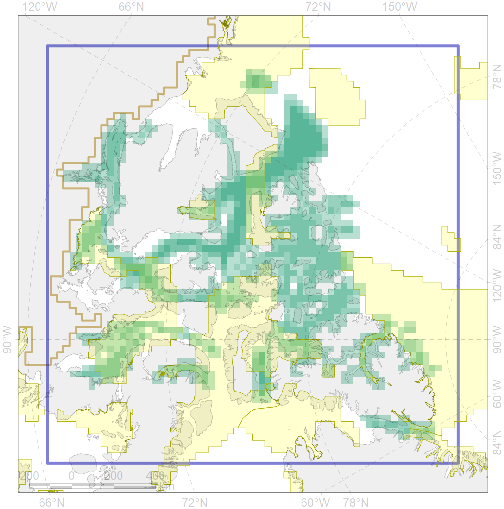

7137

| CF ID | 7137 |
| CF Name | III.1.1.4. Canadian Archipelago glacial troughs |
| Time Period | At least last 100 years |
| Source(s) | Harris et al., 2014; Carmack, Wassmann, 2006 |
| Seasonality | January - December |
| Depth Horizon | |
| Methodology | Data obtained from the literature |
| Author Name | V. Spiridonov, W. Merritt |
| Notes | |
| Conservation Target Set in the Scenario | 0.04517013 |
| Conservation Target Achieved in the Scenario | 0.292 (Scenario: 646.4%) |
| PAC ID | Proportion in the PAC | Contribution to ArcNet Target Achievement | PAC’s Contribution to the Achieved Target |
|---|---|---|---|
| 33 | 0.3% | 6.3% | 1.0% |
| 51 | 0.2% | 2.6% | 0.4% |
| 52 | 7.3% | 142.9% | 22.1% |
| 53 | 0.1% | 1.1% | 0.2% |
| 54 | 4.2% | 93.6% | 14.5% |
| 62 | 1.7% | 33.5% | 5.2% |
| 63 | 3.3% | 48.0% | 7.4% |
| 64 | 0.7% | 10.9% | 1.7% |
| 65 | 11.7% | 220.4% | 34.1% |
| inner | 29.3% | 559.4% | 86.5% |
| outer | 70.7% | 87.1% | 13.5% |